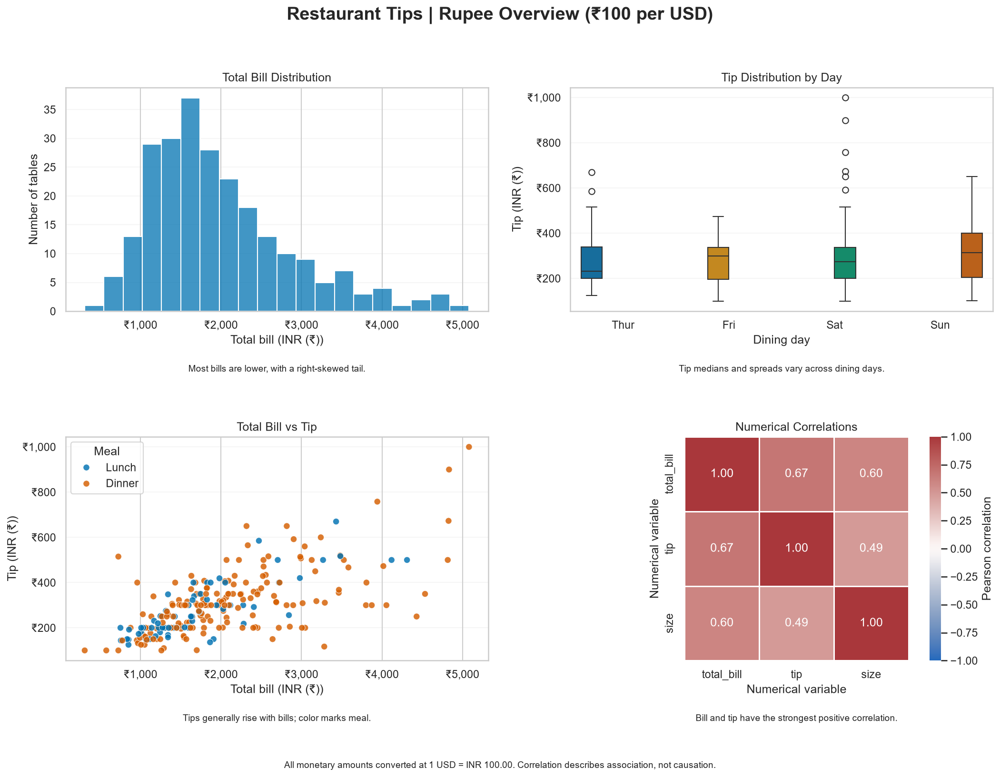
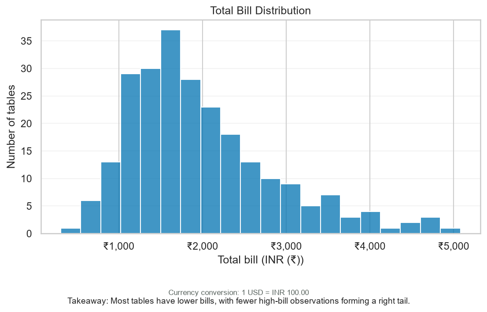
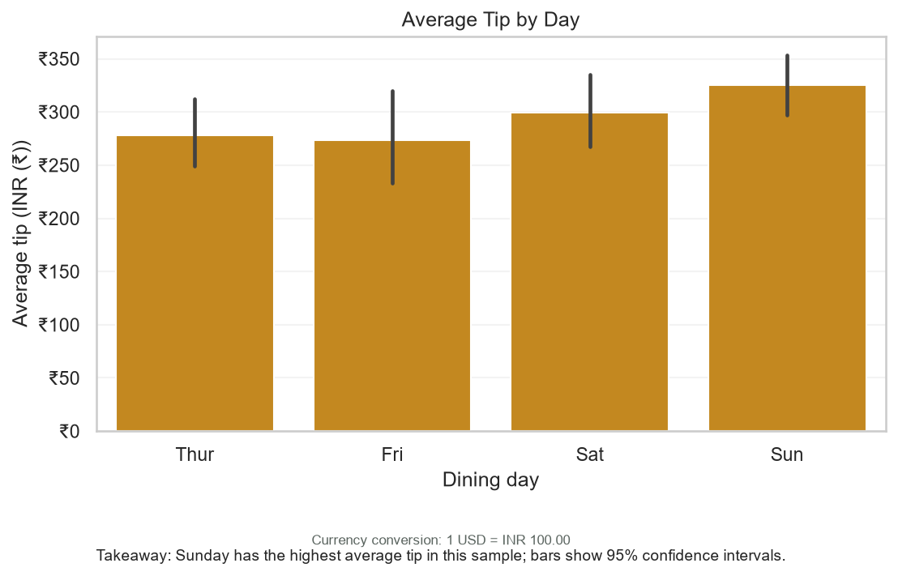
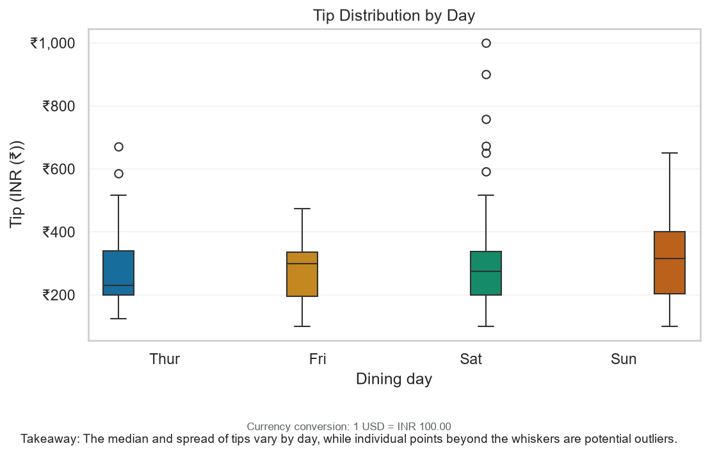
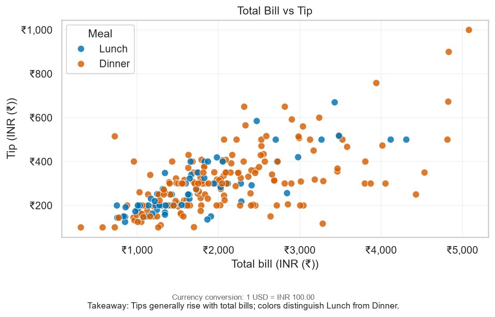
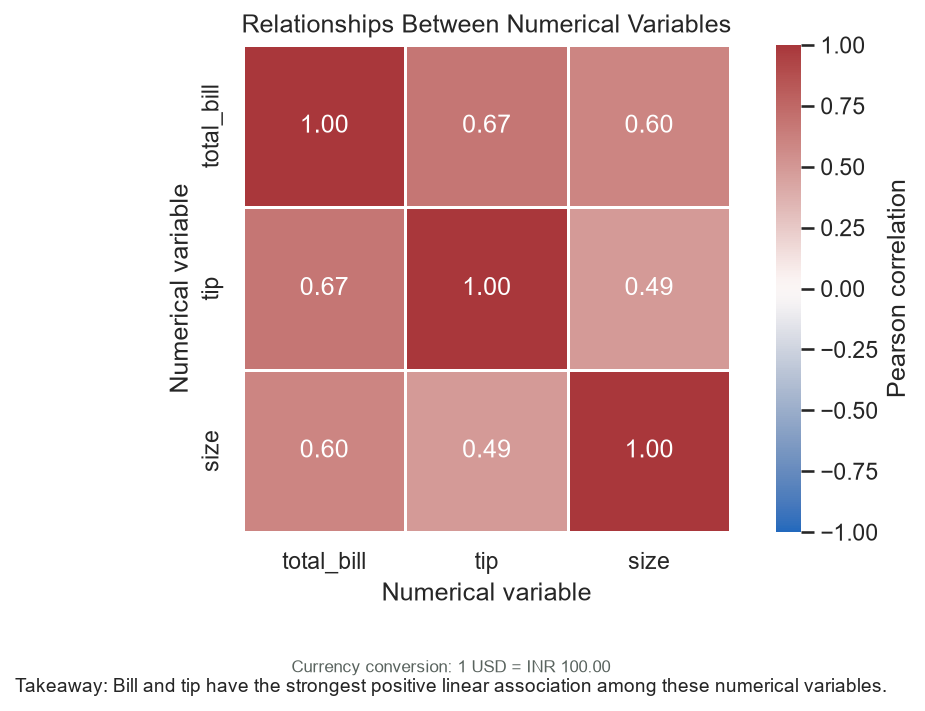

Tables analyzed
243
After removing 1 exact duplicate
What can a dinner bill tell us about tipping? Explore 243 restaurant visits through a collection of clear, thoughtful visualizations, with bill and tip values shown in Indian rupees.
Descriptive analysis · Exact duplicate removed · Source USD values converted at ₹100 per US$1
Tables analyzed
243
After removing 1 exact duplicate
Average bill
₹1,981.39
Median bill: ₹1,781.00
Highest average tip
₹325.51
Sunday
Bill ↔ tip correlation
0.675
Positive Pearson association
At a glance
Four views of bills, tips, dining days, and the relationships between numerical measures. Select the dashboard to open the full-size image.

Explore the data
Each visualization highlights a different question. Click an image to open its full-size version.

01 · Distribution
Most tables have lower bills, with fewer high-bill observations forming a right tail.

02 · Day-by-day comparison
Sunday has the highest average tip in this sample; bars include 95% confidence intervals.

03 · Spread & variation
The medians, spreads, and potential outliers show how tip distributions differ across days.

04 · Relationship
Tips generally rise with total bills. Color distinguishes Lunch from Dinner.

05 · Correlation
Total bill and tip have the strongest positive linear association among the numerical variables.
06 · Full overview
Open the beginner-friendly notebook for data checks, code, detailed results, and chart explanations.
What the data says
These findings describe the observed sample. Correlation is not evidence that one measure causes another.
The big takeaway
The bill–tip Pearson correlation is 0.675, the strongest among the three numerical measures. This is a positive association in the sample, not a causal explanation of tipping behavior.
Sunday has the highest sample average. Means use the converted rate of ₹100 per US dollar.